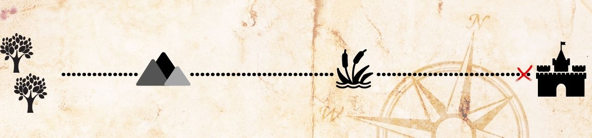

Ingwe e o grupo devem esperar o dia raiar para entrar no Reino Abençoado?
1– Esperar o dia raiar para entrar no Reino Abençoado
2– Não esperar para entrar no Reino Abençoado

2– Não esperar para entrar no Reino Abençoado